The Dark Knight Rises
Main Content
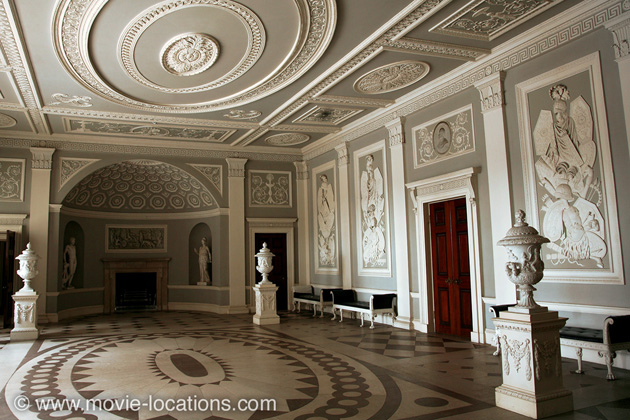
When a sequel is acknowledged to be as good as – or better than – the original film, a third episode is always in danger of falling victim to trying-too-hard syndrome (Godfather Part III, Spider-Man 3…) but, despite the unavoidable disappearance of the series’ most memorable character, The Dark Knight Rises wraps up in satisfyingly epic style.
It’s helped by Christopher Nolan's preference for in-camera effects, giving the film a physicality missing from productions which increasingly rely on CGI.
Most of the opening sequence – the skyjacking of the CIA plane by a huge C-130 Hercules transporter – was shot for real in the skies above Inverness, Scotland, with four stuntpeople rappelling from one plane to the other. A stunt it’s claimed had never been achieved before.
As with Batman Begins and The Dark Knight (as well as Nolan's Inception), sets were built in one of the two huge airship hangars at Cardington in Bedfordshire, north of London. Three miles south of Bedford, the Cardington Hangars are ideally suited to large-scale film making – they’re the largest structures of their kind in Europe.
The struggle inside the turboprop plane was filmed at Cardington, as were the Bat-Bunker, the underground prison and the Gotham sewer base of Bane (Tom Hardy).
▶ The Batcave set, complete with its working waterfalls, demanded the resources of Stage 30 at Sony Studios in Culver City, California, where there’s a tank capable of holding almost three-quarters of a million gallons of water. ⏏
But there’s plenty to see away from the studios, with the practical locations for ‘Gotham City’ ranging across both the USA and the UK.
After being burned to the ground in the first film, there was no ‘Wayne Manor’ in The Dark Knight, but now it’s back.
Bruce Wayne (Christian Bale), living in Howard Hughes-style seclusion, promised to rebuild the manor “brick for brick”. In fact, he goes slightly better.
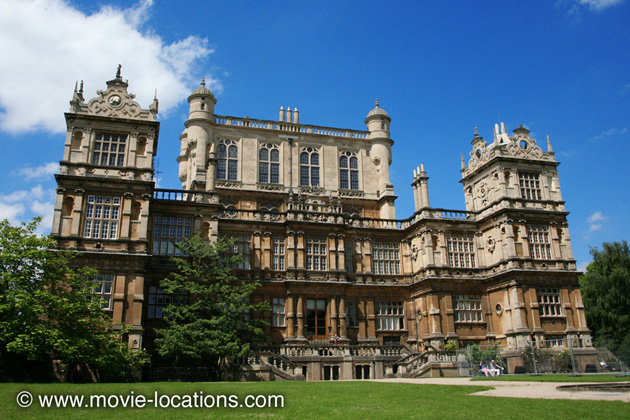
▶ In the earlier film the house was Mentmore Towers in the Buckinghamshire countryside, a Victorian mansion built for the Rothschild family in the Elizabethan style. This time around, it’s the real deal, the genuine Tudor mansion of Wollaton Hall, Nottinghamshire, in the English Midlands.
It’s no coincidence that the two buildings look so similar; the design of Mentmore was based on that of the extravagant Wollaton, which just about bankrupted Sir Francis Willoughby, its owner, when it was built in 1588.
Just a short bus ride from Nottingham city centre, the mansion was bought by the city and entry is free. It’s worth a visit, but you won’t recognise the interior, which houses a fascinatingly quirky Victorian-style natural history museum (warning – lots of period taxidermy). ⏏
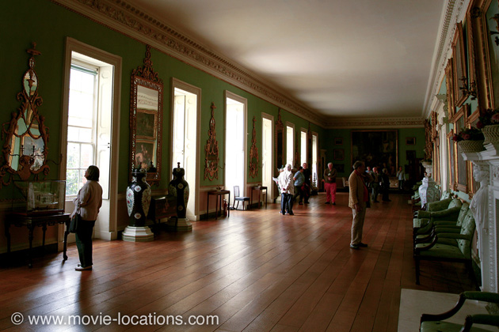
▶ The Manor interior seen in the film is a completely different house. This is Osterley Park House, Jersey Road, Isleworth, west London, another Elizabethan mansion, but this one was magnificently transformed by architect Robert Adam between 1760 and 1780, and is now a National Trust property. The house, retaining its original decoration and much of its furnishing, has been meticulously restored to appear as it did at its peak in 1782.
It’s in Osterley’s Entrance Hall that Selina Kyle (Anne Hathaway), in the guise of a maid, infiltrates the home of Bruce Wayne. Alongside the entrance hall, the house’s Long Gallery, stripped of furnishings and with its usual pale green walls painted deathly white, becomes Wayne’s private study robbed by Kyle in front of the ailing recluse.
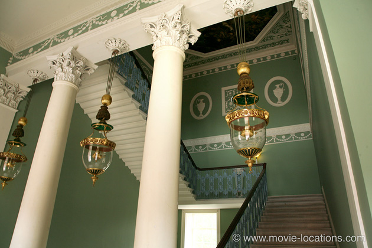
You can see Osterley’s elegant Grand Stair as Alfred (Michael Caine) gravely tells Wayne “I've sewn you up, I've set your bones, but I won't bury you. I've buried enough members of the Wayne family.” before threatening to leave his service.
Osterley has a long history on film. Back in 1960 it was the ‘Earl of Rhyall’s’ stately home in Stanley Donen’s The Grass Is Greener, with Cary Grant and Deborah Kerr. In 1965 it became the ancestral pile of Lord Carfax (John Fraser) in James Hill’s Sherlock Holmes vs Jack the Ripper shocker A Study in Terror. The house was seemingly moved to ‘Wimpole Street’ for Patricia Rozema’s 1999 Jane Austen adaptation, Mansfield Park, while the estate held the school concert, where Krishi is supposed to sing Do Re Mi, in Karan Johar’s 2001 Hindi smash Kabhi Khushi Kabhie Gham....
Since then, Osterley has appeared in The Duchess, with Keira Knightley, and in Young Victoria, with Emily Blunt. ⏏
This is only the beginning of a complex patchwork of locations seamlessly knitted together to form one city.
For the first movie, ‘Gotham’ was mainly portrayed by the quirky period architecture of old Chicago. In The Dark Knight, the city’s newer, sleeker buildings began to take over. This time, Chicago is gone completely and the city returns to the comic book roots with ‘Gotham’ as a lightly disguised New York – fleshed out with Pittsburgh and Los Angeles – often in mid-sequence. It gets very confusing.
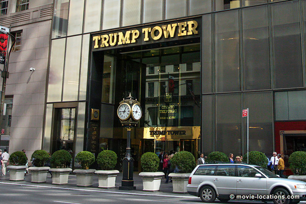
▶ The views over the city are, of course, the skyscrapers of Manhattan and, with a sly nod to Wayne’s celebrity businessman status, the entrance to ‘Wayne Enterprises’ is Trump Tower, 725 Fifth Avenue at East 56th Street. ⏏
▶ The company’s boardroom, from which Bruce Wayne is later unceremoniously ejected after a takeover, is over in downtown Los Angeles, in the office block at 550 South Hope Street. ⏏
▶ Still in LA, the city’s moneyed elite arrive for the Gotham Museum Benefit ball, thrown by Miranda Tate (Marion Cotillard), at 638 South Broadway, alongside the Palace Theatre, also downtown, but that's not where the bash itself was filmed.
▶ The stylish deco interior, where the intrigued Bruce Wayne gets to dance with burglar Selina Kyle, is the Crush Hall of Senate House, Malet Street, London WC1.
Part of the University of London, it’s not generally open to the public, but regularly features on screen – its elegant corridors became the courthouse lobby where Joe Chill was gunned down in Batman Begins. ⏏
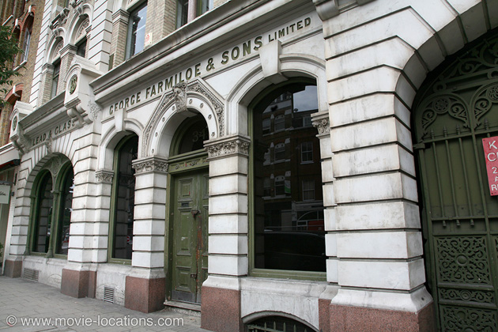
▶ Another returning London location is the Farmiloe Building, 28-36 St John Street in Clerkenwell, EC1, which again supplies interiors for ‘Gotham City Police Station’. ⏏
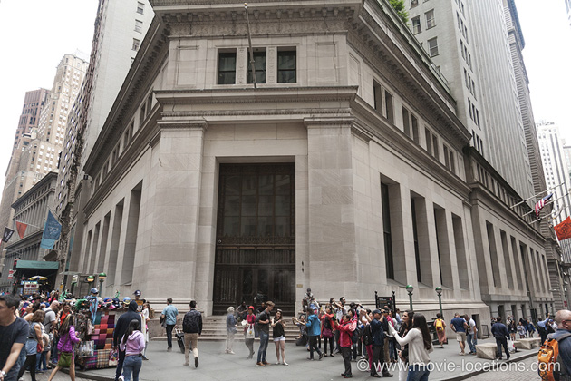
▶ ‘Gotham City Stock Exchange’ really is in Manhattan’s financial district, though it’s actually the JP Morgan Building, 23 Wall Street, on the south corner at Broad Street. ⏏
▶ Once inside, the exchange floor invaded by Bane and his men is the Zigzag Moderne Trust Building (formerly the Title Insurance and Trust Building), 433 South Spring Street, Downtown Los Angeles. This screen stalwart previously became Kate Beckinsale's ‘Manhattan’ hotel in Michael Bay's Pearl Harbor, the ‘New York’ TV station office in Roland Emmerich’s 1998 Godzilla and 'Gotham City Imports', where the diamond gets stolen in Birds Of Prey.
The subsequent chase is through the nearby streets, where you might recognise the cylindrical towers of the Westin Bonaventure Hotel on South Figueroa Street. ⏏
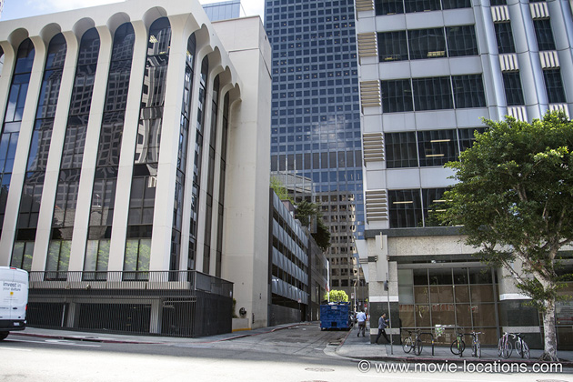
▶ A couple of blocks south of the Bonaventure, you’ll find the dead-end alley where Batman appears to be cornered by smug Deputy Commissioner Foley (Matthew Modine) only to roar out in the super-dooper flying Bat. This sidestreet is Lebanon Street, running south from Wilshire Boulevard between South Figueroa and South Flower Streets. ⏏
▶ It’s back to the UK to find ‘Gotham General Hospital’, where a ski-masked Wayne visits the injured Commissioner Gordon (Gary Oldman). To the south of London, it’s office block Delta House on Wellesley Road, at Station Road, alongside West Croydon Station. ⏏
With Bane’s stock market scam leaving Wayne Enterprises broke, and Bruce Wayne entrusting the experimental energy source to Miranda Tate, the company is taken over by devious Roland Daggett. It’s clearly time for the bat-man to return.
▶ Just as he appeared dramatically among the elaborate ornamentation of Chicago’s Jewelers Building in Batman Begins, here Batman surveys the city from atop the Queensboro Bridge in Manhattan. ⏏
From the heights to the depths. The subway tunnel to which Kyle lures Batman into Bane’s trap, is Military Park Station, on the Newark Light Rail, between Orange Street and Newark Penn Station, New Jersey.
▶ We’re not long in Jersey. The tunnel appears to run directly under the ‘Applied Science Division’ of Wayne Enterprises and, once the roof is blown away, this turns out to be the Los Angeles Convention Center, Figueroa Street between 11th Street and Venice Boulevard, downtown LA, where Bane’s henchmen get their hands on Wayne’s expensive toys. See the Center also in Rush Hour, John Woo’s Face/Off and as the spaceport in Paul Verhoeven’s Starship Troopers. ⏏
As Wayne is spirited away, and Bane begins his takeover of the city, Selina Kyle plans to leave Gotham for Europe.
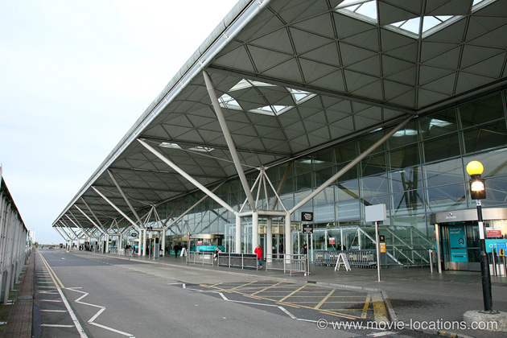
‘Gotham International Airport’, where she’s stopped at the last minute by John Blake (Joseph Gordon Levitt), is the sleekly modern Stansted Airport in Essex, which obviously has some kind of American vibe, since we previously saw it masquerading as ‘JFK Airport’ in Bridget Jones’s Diary and more recently as 'Newark New Jersey' at the end of Spider-Man: Far From Home.
After New York, Los Angeles and London, it’s finally time for Pittsburgh to come into its own, with the city’s downtown business district taking over as the streets of ‘Gotham’.
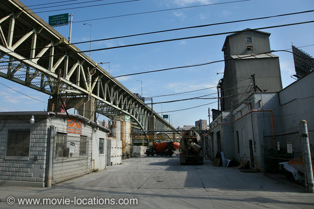
▶ South of downtown, across the Monongahela River at McKees Rocks, there’s a game-changing moment as Blake discovers what’s really going on at the ‘Broucek Cement Company’. This is a real cement works in Pittsburgh – the Frank Bryan Cement Plant, 100 South 3rd Street, beneath the Liberty Bridge. ⏏
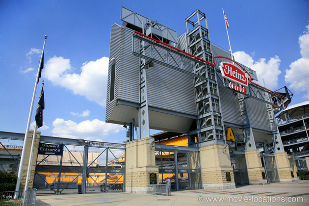
▶ North of the river, in the North Shore district, you’ll find the home of the ‘Gotham Rogues’, the football field where Bane demonstrates his explosive power.
Home in real life to the Pittsburgh Steelers, it’s Heinz Field, 100 Art Rooney Avenue, where the production generated enough excitement to attract more than 11,000 unpaid extras to watch real explosions on the pitch (full advantage was taken of the fact that the stadium’s turf was about to be replaced for the new football season). ⏏
▶ The home of Deputy Police Commissioner Peter Foley (Matthew Modine), where he initially refuses a plea to join the fight against Bane, is 170 41st Street, between Foster Street and Eden Way, in Lawrenceville, northwest Pittsburgh. As ever, this is a private home, so please do nothing to disturb the residents. ⏏
With Bane calling the shots, Gotham is sealed off, and it’s briefly back to New York to see tanks stationed on the Queensboro Bridge over the East River.
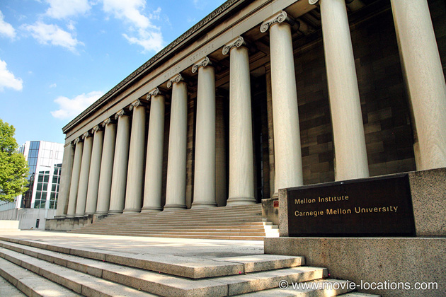
▶ But Pittsburgh is soon centre-stage again. ‘Gotham City Hall’, where Bane reads out the incendiary contents of Commissioner Gordon’s stolen speech, is the grand frontage of Pittsburgh’s famous Carnegie Mellon Institute, Fifth Avenue, at Bellefield Avenue. ⏏
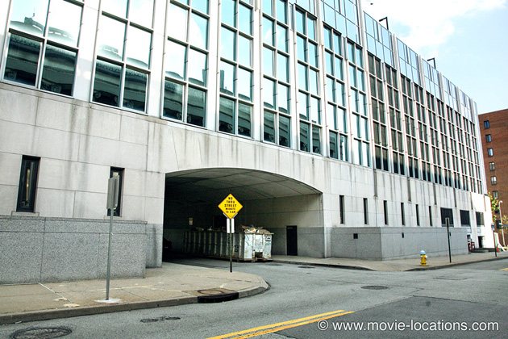
▶ Not quite opposite, as it appears in the film, but alongside the Institute, the western side of Carnegie Mellon University’s Software Engineering Institute, South Dithridge Street between Fifth Avenue and Winthrop Street, was transformed into the entrance to ‘Blackgate Prison’, from which hundreds of criminals imprisoned under the Dent Act are released. ⏏
▶ The promised storm arrives, as the mob drags Gotham’s rich citizens from their posh addresses on New York’s Park Avenue around 84th Street. ⏏
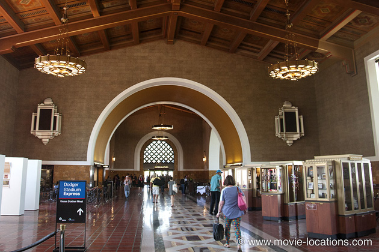
▶ Rough justice is handed out by a makeshift court, presided over by Dr Crane (Cillian Murphy), which is convened in the spacious foyer of Union Station, 800 Alameda Street, downtown Los Angeles, another familiar location, probably most famous as the futuristic cop station in Ridley Scott’s Blade Runner. ⏏
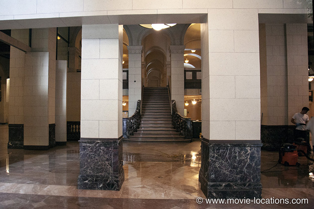
▶ Most of Gotham police force now trapped underground by Bane’s citywide pyrotechnics, Blake and a handful of good cops meet up with Fox, and the truth about the atomic device is revealed. It’s in the old Bank of America Building, 650 South Spring Street, downtown Los Angeles, soon taken over by Bane.
Christopher Nolan filmed part of The Prestige here, and the location must be familiar to Morgan Freeman too – among its many screen appearances, it was used as the ‘library’ where he researched the Deadly Sins in David Fincher’s Se7en. ⏏
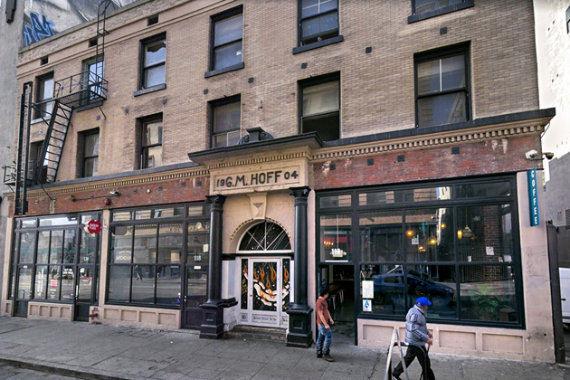
▶ Beleaguered citizens of ‘Gotham’ queue up to receive emergency supplies outside the GM Hoff Building, 118 East 5th Street at Los Angeles Street, in downtown Los Angeles. Eagle-eyed movie buffs might recognise this as the bail bonds office of Eddie Moscone (Joe Pantoliano) in 1988’s Midnight Run or as the liquor store raided by the doomed Father Hennessy in Francis Lawrence's 2005 supernatural thriller Constantine, with Keanu Reeves. ⏏
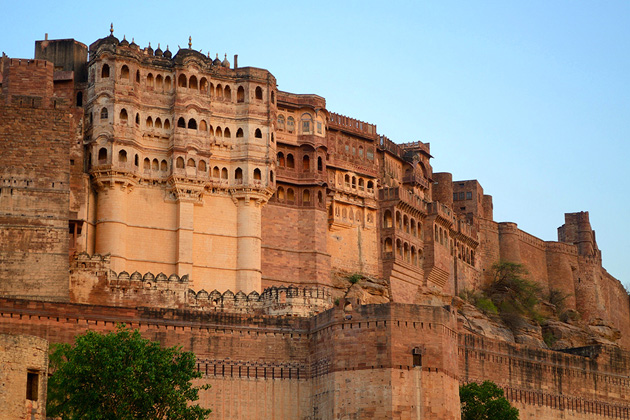
▶ There’s a major detour to India, to Jodhpur, the second largest city in the Indian state of Rajasthan, in the northwest of the subcontinent.
The subterranean prison in which Wayne is held captive was built at Cardington in the UK, but on finally escaping, he finds himself in front of the spectacular Mehrangarh Fort, a vast 15th century Hindu fort crowning a perpendicular cliff, four hundred feet above the sky line of Jodhpur. ⏏
The ‘Gotham’ he returns to is, at first, Los Angeles.
▶ Cop cars are piled up at the entrance to Los Angeles’s Third Street Tunnel, at South Flower Street, and it’s here, on the walkway near Hill Street, downtown, that Selina Kyle shows a softer side, rescuing a kid with a stolen apple from thugs, and is confronted by the newly-returned Bruce Wayne. ⏏
When it comes to rescuing Fox and Tate, it’s to London and Senate House again.
▶ The search to pin down the constantly moving truck carrying the nuclear device is largely around downtown Pittsburgh, on Strawberry Way, 7th Avenue, William Penn Place and Exchange Way. ⏏
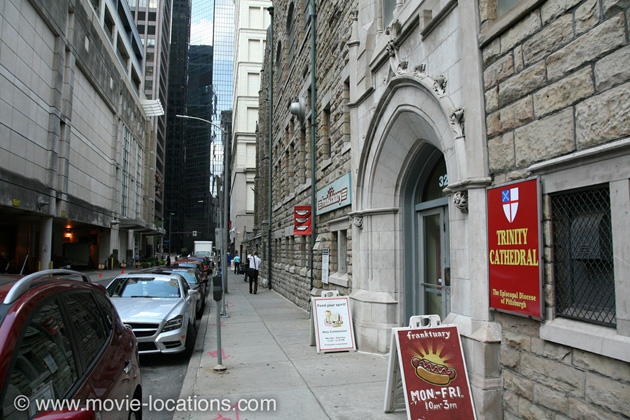
▶ With the nuclear detonation approaching, Blake evacuates the kids from ‘St Swithin’s’ orphanage, which is the Franktuary, 333 Oliver Avenue east of Wood Street, at the rear of Pittsburgh’s Trinity Cathedral. ⏏

▶ When the truck carrying the real bomb plunges to a lower level roadway, we’re back in Los Angeles. The drop is from the Upper Level of South Grand Avenue to the Lover Level at 4th Street in downtown. You might recognise this two-tier stretch of road as the spot where gifted street musician Jamie Foxx plays cello in Joe Wright’s The Soloist. ⏏
‘Gotham’ is naturally saved, as the Bat flies off with the bomb, to explode away from the city, over the sea.
The unveiling of the statue of Batman, attended by Commissioner Gordon, is in the rotunda of Newark City Hall, 920 Broad Street, Newark, in New Jersey, with its grand double staircase.
There’s a final funeral back in the grounds of Wollaton Hall in Nottingham.
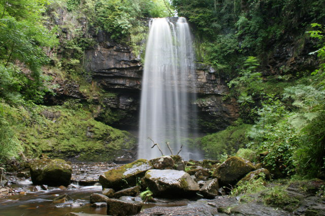
▶ It’s just left to John Blake to make an important discovery behind Sgwd Henrhyd, the Henrhyd Waterfall, about 15 miles northeast of Swansea on the southern edge of the Brecon Beacons National Park in South Wales. You can find the falls (at 90 feet, it’s the tallest waterfall in South Wales) just to the north of the village of Coelbren, on the road between Glynneath and Abercraf. From the National Trust car park, east of the village, there’s a steep walk down to the falls. ⏏
▶ And the epilogue, set on the sun-dappled terrace of an Italian bar? Well, sorry to disappoint but that’s London. It’s the colonnade of the Old Royal Naval College, King William Walk, London SE10 – a location familiar from such films as Les Misérables, Thor – The Dark World, Cruella and Sherlock Holmes, among many others. ⏏
Visit Info
Visit The Film Locations
California | Los Angeles
Visit: Los Angeles
Flights: Los Angeles International Airport (LAX), 1 World Way, Los Angeles, CA 90045 (tel: 424.646.5252)
Travelling around: Los Angeles Metro
Pennsylvania
Visit: Pennsylvania
Visit: Pittsburgh
Flights: Pittsburgh International Airport, 1000 Airport Boulevard, Pittsburgh, PA 15231 (tel: 412.472.3525)
Visit: Heinz Field, 100 Art Rooney Avenue, Pittsburgh, PA 15212 (tel: 412.697.7700)
New York
Flights: John F Kennedy International Airport, New York, NY 11430 (tel: 718.244.4444)
Visit: New York
Travel around: MTA
New Jersey
Visit: New Jersey
India
Visit: India
Visit: Jodhpur
Visit: Mehrangarh Fort, Fateh Pol Road, Sodagaran Mohalla, Jodhpur, Rajasthan 342006
UK | London
Flights: Heathrow Airport; Gatwick Airport
Visit: London
Travelling: Transport For London
Visit: Osterley Park House, Jersey Road, Isleworth, TW7 4RB (tel: 020.8232.5050)
Visit: the Old Royal Naval College, King William Walk, London SE10 9NN (tel: 020.8269.4747) (rail: Greenwich)
Scotland
Visit: Scotland
Wales
Visit: Wales
Visit: the Brecon Beacons National Park
Nottinghamshire
Visit: Nottinghamshire
Visit: Wollaton Hall, Gardens & Deer Park, Wollaton Park, Wollaton, Nottingham, NG8 2AE (tel: 0115.8763100)
Bedfordshire
Visit: Bedfordshire
Essex
Visit: Essex
Flights: Stansted Airport, Bassingbourn Road, Stansted, Essex CM24 1QW (tel: 0844.335.1803)